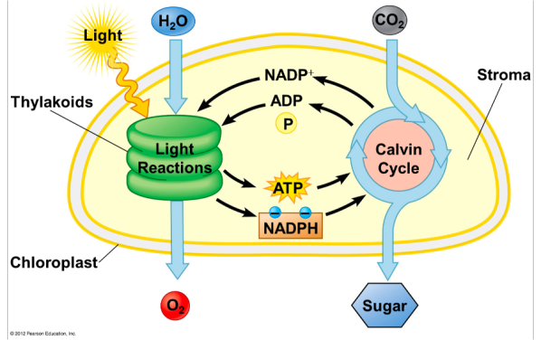
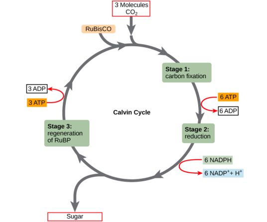
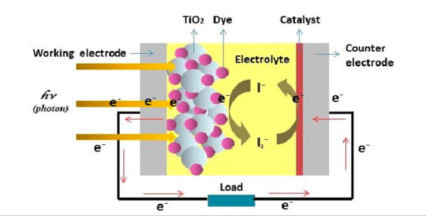
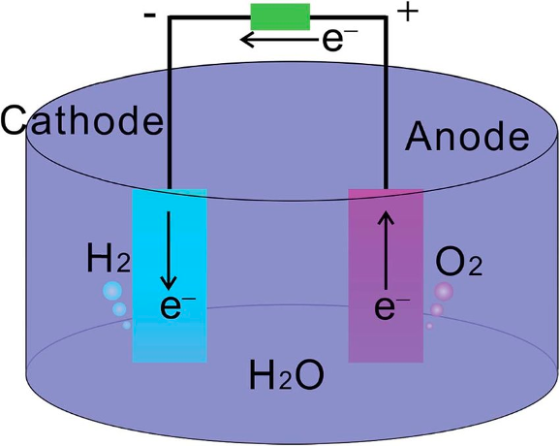

The Need
The rise in demand for energy coupled with the environmentally degrading means of producing energy is a pressing predicament facing humanity. Non-renewable energy sources like fossil fuels have consumed the majority of energy. Fossil fuels contribute to rising greenhouse gas emissions in a finite amount. While there has been a shift towards alternate sources, specific industries such as transportation and chemical industries remain heavily reliant on fossil fuels.
Currently, more environmentally friendly solutions include hydropower, wind energy, nuclear fusion, and solar energy. However, each technology has its limitations. Nuclear fusion generates radioactive wastes that have detrimental effects on human health. Hydroelectric energy requires a high cost and could harm its surroundings. The strict specifications of the location of wind power, typically in remote areas, prevent large-scale implementation. While solar energy holds enormous potential, current photovoltaics that utilizes solar energy are dependent on weather conditions and have low efficiency. Artificial photosynthesis is an emerging technology that aims to harness this solar energy and store it within chemical bonds. Furthermore, this process seeks to imitate natural photosynthesis, including water-splitting and carbon fixing.
Looking Back to Nature
Even now, the most prominent fuel sources - fossil fuels and natural gas - are forms of preserved chemical energy stored by the process of photosynthesis years ago. Photosynthesis happens when plants convert sunlight, water, and carbon dioxide into glucose, oxygen, and ATP. It occurs mainly within chloroplasts, organelles within plant cells that contain thylakoids surrounded by the stroma. The membrane of thylakoids is where Photosystem I and Photosystem II are located.
Fig. 1. Photosynthesis at a Molecular Level. From [10]
On the molecular level, there are two main components of photosynthesis:
- Light-dependent Reactions
The light-harvesting complex or antennae system consists of chlorophyll molecules and proteins. These chlorophyll molecules absorb photons, which excite electrons into higher states. This excitation energy is then transferred through the process of resonance energy transfer, and accepted by the reaction center of the chloroplast.
There, electrons are excited so that it is free to be transported along the electron-transport chain. To fill in the hole left by the electron, the process of photolysis oxidizes water molecules (H2O) to produce free electrons, hydrogen (H+) and oxygen gas (O2) as a byproduct, described by the reaction 2H2O + 4y → 4H+ + 4e- + O2. The hydrogen ions are then pumped through the thylakoid membrane into the stroma, creating an electrochemical proton gradient to form ATP. This process converts light energy from the sun and stores it as chemical energy within hydrogen bonds. Meanwhile, in Photosystem I, the weakened electrons are re-energised by photons, allowing for NADP+ to be converted into NADPH. The products of these light dependent reactions - ATP and NADPH- are used subsequently in the production of glucose molecules.
- Calvin Cycle

Fig 2. Calvin Cycle. From [9]
The Calvin cycle occurs in the stroma, and it is the process where glucose is produced through carbon fixation. ATP and NADPH formed from the light-dependent reactions are used to reduce carbon molecules into G3P compounds. Some of the G3P molecules that were produced can form glucose, while the remaining is reused in this process.
However, while natural photosynthesis can capture photons of all visible wavelengths, only the red portion of the electromagnetic spectrum is used in photosynthesis. The process of degrading shorter wavelengths to red photons results in the loss of energy and reduced efficiency. The typical efficiency of photosynthesis is around 1%, with the maximum efficiency reached being 4.5%.
Brief Mechanics of Artificial Photosynthesis
Artificial photosynthesis aims to capture photons and store the solar energy within hydrogen bonds through water splitting. The three primary functions of artificial photosynthesis include:
- Conversion of solar energy into electrical energy

Fig 3. Diagram of Dye-Sensitised Solar Cells. From [7]
Dye-sensitized solar cell (DSSC) is a mechanism that produces electrical energy by converting light energy. Using artificial materials, it mimics the principles of photosynthesis, in which excited electrons are converted into other forms of energy. The dye molecules absorb the energy of a photon, freeing an electron. Semiconductors transport the free electron from the anode to the cathode, forming an electrical current. This process is repeated as the electrons are returned to the dye molecule via the electrolyte redox shuttle.
- Decomposition of water to generate fuel

Fig 4. Diagram of Decomposition of Water. From [8]
Photocatalysts are materials that precipitate the decomposition of substances when exposed to light. In the context of artificial photosynthesis, they are required for charge separation, to energize water molecules and free electrons, and must be sensitive to the visible-light spectrum and work well under varying conditions of sunlight. The effectiveness of a photocatalyst is dependent on the band-gap energy or the energy required to excite an electron to the conduction band. The most effective photocatalysts are the platinum group metals; however, their high cost and scarcity rule these materials as unsuitable for global implementation. In 1972, Fujishima and Honda achieved water splitting in an electrochemical cell using UV light and a cheaper alternative of a photocatalyst - TiO2. Since then, other semiconductors with large band gaps have been experimented with in water splitting, mimicking the function of reaction centers found in natural photosynthesis.
- Reducing carbon dioxide
While still under experimental procedures, there are multiple methods to approach Carbon Dioxide fixation under visible light irradiation, including:
Electrochemical CO2 Reduction
Electrochemical reduction of carbon dioxide or the electrolysis of CO2 is where carbon dioxide molecules are decomposed and reduced. This process can be powered by the electrical energy generated by the decomposition of water molecules. However, the multiple steps would require the use of photovoltaic cells, electrolyzers, and batteries.
Photocatalytic and electrochemical carbon dioxide reduction
Photocatalytic and electrochemical carbon dioxide reactions utilize electrons, water molecules, and hydrogen molecules to reduce carbon dioxide into other compounds. This method is advantageous as it allows for the direct utilization of solar power in the decomposition of carbon dioxide molecules. Furthermore, this process can occur at standard conditions of temperature and pressure and also have greater efficiency than natural photosynthesis.
Current Systems
There are currently three main types of systems that combine the functions of artificial photosynthesis, utilizing solar energy to generate fuel and decompose carbon dioxide:
- Suspended nanopowder photocatalysts
Semiconductor particles are suspended in liquid electrolytes to absorb photons and excite electrons. These electron and hole pairs are then used in reduction and oxidation reactions, such as decomposing water or carbon dioxide molecules.
- Photoelectrochemical cells (PEC)
A PEC system consists of a photoanode and a photocathode to perform the process of water-splitting. The photoanode utilizes solar energy to excite and free electrons, while the photocathode creates hydrogen molecules using the reductive electrons.
- Photovoltaic cell-driven electrolyzers
Photovoltaic cell-driven electrolyzer connects DSSC to an electrolyzer to produce hydrogen by the following steps: 1) convert solar energy to electrical energy, 2) split water molecules via electrolysis using the electrical energy.
However, further research is required to determine which photocatalytic system would be best suited for the global implementation of artificial photosynthesis.
References
- Lee, Y. V., & Tian, B. “Learning from Solar Energy Conversion: Biointerfaces for Artificial Photosynthesis and Biological Modulation,” Nano letters, 19(4), 2189–2197, 2019 https://doi.org/10.1021/acs.nanolett.9b00388
- Barber, J., & Tran, P. D. (2013), “From natural to artificial photosynthesis,” Journal of the Royal Society, Interface, 10(81), 20120984, 2013. https://doi.org/10.1098/rsif.2012.0984
- Keijer, T., Bouwens, T., Hessels, J., & Reek, J., “Supramolecular strategies in artificial photosynthesis,” Chemical science, 12(1), 50–70. 2020. https://doi.org/10.1039/d0sc03715j
- McConnell, I., Li, G., & Brudvig, G. W, “Energy conversion in natural and artificial photosynthesis,” Chemistry & biology, 17(5), 434–447, 2010. https://doi.org/10.1016/j.chembiol.2010.05.005
- Lokstein, H., Renger, G., & Götze, J. P., “Photosynthetic Light-Harvesting (Antenna) Complexes-Structures and Functions,” Molecules (Basel, Switzerland), 26(11), 3378, 2021. https://doi.org/10.3390/molecules26113378
- En.wikiversity.org. 2022. File:The light reactions and the Calvin Cycle.png - Wikiversity. [online] Available at: https://en.wikiversity.org/wiki/File:The_light_reactions_and_the_Calvin_Cycle.png. [Accessed 22 June 2022].
- Jamalullail, Nurnaeimah & Mohamad, Ili Salwani & Norizan, Mohd Natashah & Baharum, N. & Mahmed, Norsuria. (2017). Short review: Natural pigments photosensitizer for dye-sensitized solar cell (DSSC). 344-349. 10.1109/SCORED.2017.8305367.
- Peng, Xiang & Pi, Chaoran & Zhang, Xuming & Li, Shuai & Huo, Kaifu & Chu, Paul. (2019). Recent Progress of Transition Metal Nitrides for Efficient Electrocatalytic Water Splitting. Sustainable Energy & Fuels. 3. 10.1039/C8SE00525G.
- "The Calvin Cycle | Biology I", Courses.lumenlearning.com, 2022. [Online]. Available: https://courses.lumenlearning.com/suny-biology1/chapter/the-calvin-cycle/. [Accessed: 23- Jun- 2022].
- "File:The light reactions and the Calvin Cycle.png - Wikiversity", En.wikiversity.org, 2022. [Online]. Available: https://en.wikiversity.org/wiki/File:The_light_reactions_and_the_Calvin_Cycle.png. [Accessed: 23- Jun- 2022].
{kind=link}